travel
一、不同的世界，带给你快乐和幸福。如果你不走出去，你以为世界就这么大；
如果你不走进别样的领域，你就以为世界上的人都过着和你一样的生活。走出去，
别样的风光，别样的世界，会为你封闭已久的心灵打开一扇窗，让你的世界豁然开朗，
你会在看风景、品美食、住宾馆、赏民俗、
听故事的种种过程中体验日常生活中体验不到的快乐。
二、开阔眼界，增长知识和见闻。古人云，行万里路，
读万卷书，提倡“走读”。旅游，就是一次走读的过程。
当你在新疆碰见胡杨或者在海南遇见椰子树，你自然会和它周围的气候、
土壤联系起来道出因果，这和过去地理书上的长篇说教比起来更容易接受、
理解和记忆。所到之处，不同地方的地势概况、建筑风格、
植物动物、着装特点、民风名俗、饮食习惯、宗教信仰等等，
在你的亲身体验和各种不同的传说、典故和逸闻异事的耳闻中了然于心，
不像在书本上学习，死记硬背，缺乏感性认识。
三、缓解压力，使精神得到放松。人生万把天，一年365个日子，
没有逗号的人生我们的心总会疲惫，旅途就是给人生这个马拉松比赛画个逗号——让疲惫的心歇歇。
放下手头所有的繁杂，清空脑子里边的琐碎，到一个陌生的地方，
谁也不认识你，你也不认识谁。不用为任何人负责，也不需要别人的牵绊，
放松自己，享受那种独有的自在。(有时候私底下问自己，
这种心理算不算一种逃避？逃避现有的工作环境，现有的生活环境，
甚至逃避自己的内心，但反过来想，即便逃避，
也是一种短暂的休息，养精蓄锐，重新面对一切）。
北京
简介 :
八达岭长城史称天下九塞之一，是万里长城的精华， 在明长城中，独具代表性。八达岭长城是万里长城向游人开得最早的地段，八达岭景区以八达岭长城为主， 兴建了八达岭饭店、全周影院和由江泽民主席亲笔题名的中国长城博物馆等功能齐全的现代化旅游服务设施。 八达岭景区以其宏伟的景观、完善的设施和深厚的文化历史内涵而著称于世。 八达岭地理环境优越，自古以来就是通往山西、内蒙、张家口的交通要道。 98年，八达岭高速公路建成通车，交通十分便利。而且，八达岭的年平均气温比北京低3℃以上， 成为"夏都"延庆的旅游龙头。 八达岭长城在北京延庆县。是长城的一个隘口。其关城为东窄西宽的梯形 ，建于明弘治十八年（1505年），嘉靖、万历年间曾修茸。关城有东西二门东门额题"居庸外镇"， 刻于嘉靖十八年（1539年）；西门额题"北门锁钥"，刻于万历十年（1582年）。两门均为砖石结构， 券洞上为平台，台之南北各有通道，连接关城城墙，台上四周砌垛口。京张公路从城门中通过，为通往北京的咽喉。 从"北门锁钥"城楼左右两侧，延伸出高低起伏、 曲折连绵的万里长城。长城全长6,700公里，是世界上古老的伟大建筑之一。
简介 :
北京水立方位于北京奥林匹克公园内，2008年北京奥运会标志性建筑物之一。 “水立方”与国家体育场“鸟巢”分别位于中轴线两侧，一方一圆，遥相呼应，构成了“人文奥运”的独特风景线。 整个“水立方”分为4层，其中负一层是比赛工作区，一层和二层分别是游览区和观众席，三层为场馆预留经营场地。 “水立方”的建筑结构来自于肥皂泡堆积的概念，因为要造出水分子的感觉， 每个气枕都是不规则的多面体，所以气枕依托的钢架构也要求是多维空间的12面体或者14面体， 搭建这样的钢架构在国内乃至世界上都是第一次。 构成“水立方”皮肤的是3000多个由ETFE膜制成的不规则的气枕泡泡， 在场馆四周设有一圈高2米的护栏，并在护栏内开凿了一道宽6米、 深0.5米的护城河。由于气枕是半透明的，鸟不会在上面停留， 屋顶的气枕框架边缘还装有极细的钢丝线，防止鸟对气枕造成破坏。 在场馆内部，观众也只能在170平方米的泡泡吧里近距离接触气枕，其他区域都无法触摸。

简介
位于北京市中心的故宫原为紫禁城，古时是明清两代的皇宫，是权利的象征. 1949年中国在这里宣布解放，并把它列为全国重点文物保护单位。 它占地72万多平方米，建筑面积约15万平方米，8000余间楼房的宏大规模，使整个故宫雄伟壮观，气势磅礴。 依据建筑的布局与功用分为“外朝”与“内廷”两大部分。 1、太和门三大殿 太和、中和、保和三大殿中太和殿位于中心，红墙黄瓦，金柱蟠龙，富丽堂皇。 2、延寿堂 慈宁宫花园的西侧，坐北朝南，青砖灰瓦，朴素淡雅，没有皇家的威严气势却有着别样的典雅意境， 在花园的绿树掩映下，仿佛遗世独立。 3、午门、东华门 紫禁城的主要大门，放眼望去，城墙、城楼，黄色的琉璃瓦，汉白玉的栏杆，宏伟庄严，令人肃然起敬。 4、九龙壁 九龙壁由上等琉璃砖瓦拼砌而成，栩栩如生，令人产生一种巨龙盘旋而上， 直冲天际之感。 故宫内还有众多展览馆，有外朝武英殿区的书画馆、陶瓷馆； 内廷东六宫区钟粹宫的玉器馆、景阳宫的金银器馆； 奉先殿区的钟表馆；宁寿宫区的珍宝馆、石鼓馆和戏曲馆等。
简介
颐和园位于北京西北郊，主要由万寿山和昆明湖组成。早在元明时期， 这里就以其优美自然的田园景色成为“壮观神州第一”的著名游览胜地。今之万寿山， 元朝名瓮山，传说有一位老人在山上掘出一装满宝物的石瓮而得名。山前有湖名瓮山泊。 公元1292年（元朝至元二十九年），科学家郭守敬开挖通慧河，将昌平及西山一带泉水汇引湖内， 注入宫墙，接济漕运，瓮山泊始成为调济京城用水的蓄水库。由此至明， 环湖先后建有多座颇具影响的寺观，其中尤以湖西北岸的“大承天护圣寺”规模最巨，楼宇恢弘， 汉白玉钓台延入湖中，元朝皇帝常至此泛舟游幸，捕鱼垂钓。 明朝时，瓮山泊改称西湖， “环湖十里，为一郡之胜地”。每年桃红柳绿时，京城百姓扶老携幼，争往西湖踏青赏春， 名曰：“耍西湖景”。时人尚有“西湖十寺”与“西湖十景”之誉。 颐和园原是清朝帝王的行宫和花园，前身清漪园，是三山五园中最后兴建的一座园林， 始建于1750年。
上海
简介 :
上海迪士尼乐园（上海迪斯尼乐园）位于上海浦东，属于上海迪士尼度假区的一部分。 乐园在2011年4月8日动工兴建，将由华特迪士尼公司和上海申迪集团组成的合资公司持有及营运。 上海迪士尼乐园将与其他世界各地传统“迪士尼乐园” （Disneyland）的规划有所不同，且将不包含许多其他迪士尼乐园内的知名设施。 上海迪士尼乐园不使用迪士尼常见的“枢纽与轴辐”（hub & spoke）设计， 乐园内并不会有传统的“枢纽”区域，也没有绕行整个园区的轨道运输设施。 取代“枢纽”的是在乐园中央占地11英亩大型花园 。乐园内的旋转木马和《小飞象》游乐设施将设置在中央城堡的“前方”而非后方， 这是迪士尼乐园中首次出现的规划设计。此外，与其他迪士尼乐园不同， 上海迪士尼乐园中将没有“边域世界”（Frontierland）和“美国小镇大街” （Main Street U.S.A.）区域。在开幕时， 上海迪士尼乐园将会有七个主题区域，分别为： 米奇大道（Mickey Avenue）、幻想世界（Fantasyland） 、想像花园（Gardens of Imagination）、明日世界 （Tomorrowland）、玩具总动员大本营（Toy Story Land） 、宝藏湾（Treasure Cove）和冒险岛（Adventure Isle）。

简介
黄浦江是流经上海市区最大的河流， 黄浦江源头坐落在浙江安吉龙王山自然保护区内。由于黄浦江通江接海， 受到潮汐影响，平均每天两次有明显的涨潮和退潮现象，一天内的水位落差可达4米以上， 如遇天文大潮，水位落差就更大了。 在一百五十年前，上海仅是江南沿海的一个中等县城，航运事业很不发达， 人们没必要、也没能力在沿江修筑堤岸，所以除东门黄浦江岸外大部分江岸是一片自然滩地。 退潮时，江水聚滞在河床中心，露出一大片滩地。涨潮时，江水又没过河滩。 黄浦江是上海的主要河道。由于江宽水急，逆水而行的船只就须拉纤行走。 几百年来，纤夫的足迹就在黄浦江滩踩出一条曲折多弯的小道，人们称之“纤道” ，这纤道就是外滩最早的路了。在上海的地名习惯用词中， 一般把河流的上游叫作“里”，河流的下游叫作“外”， 如今天上海人习惯把虹口港上的汉阳路桥叫作“里虹桥”，把长治路桥叫作“中虹桥” ，把大名路桥叫作“外虹桥”，就是根据桥所在河流的位置来取名的。同样， 今苏州河入黄浦江口的第一座桥叫作“外白渡桥”， 依次向里的桥也俗称“里白渡桥”（今乍浦路桥）、三白渡桥（今四川路桥）。如以县城为依据时， 距城近的地方称为“里”， 距城远的地方称为“外”， 今南市区的“里咸瓜街”和“外咸瓜街”；“里仓桥”和“外仓桥”等就是以此得名的。
纽约
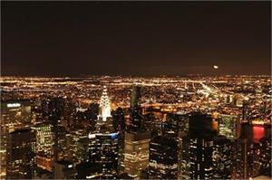 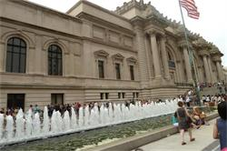 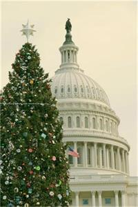 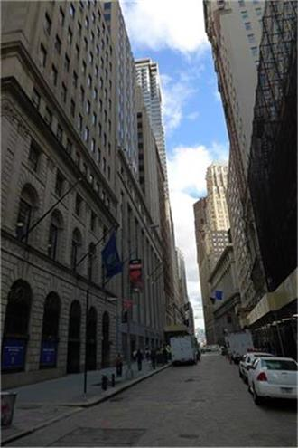 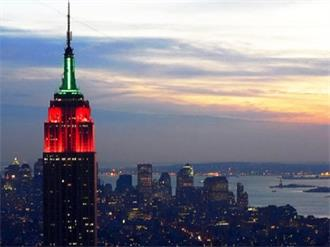 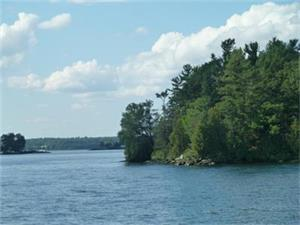 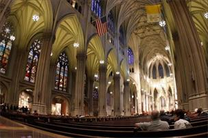 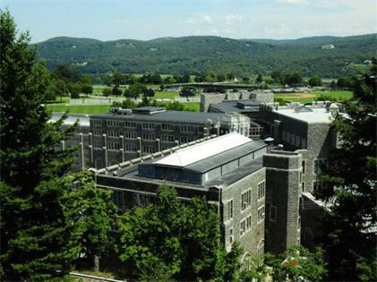 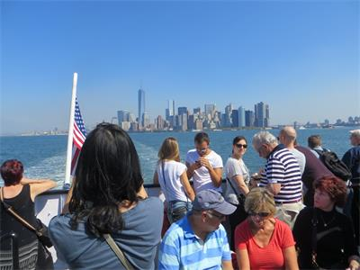 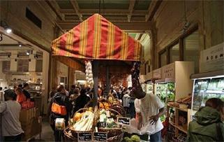
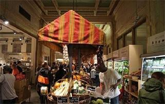